<!-- Title --> ## 🌏丸い地球を効率的に平たくする ### 🗺️地図の幾何学とWeb地図技術 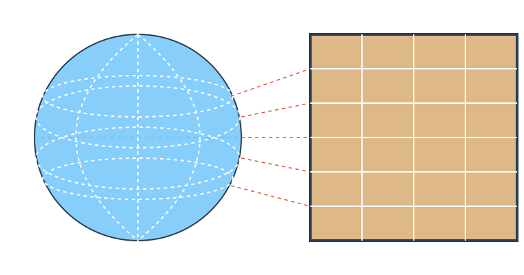 --- ### 自己紹介 <div class="profile-container"> <div class="profile-left" data-markdown> * さめ(meg-ssk) * 🧑💻 フリーランスのソフトウェアエンジニア * 得意分野: * 📸 コンピュータビジョン (画像認識/点群処理) * 🌍 空間情報処理 (GIS/リモートセンシング) * ☁️ クラウドインフラ設計/IaC (AWS, GCP) * [GitHub](https://github.com/s-sasaki-earthsea-wizard) * [YouTube](https://www.youtube.com/@SyotaSasaki-EW) * [Speaker Deck](https://speakerdeck.com/syotasasaki593876) </div> <div class="profile-right"> </div> </div> --- ### 世界地図 <div class="simple-box"> * 世界地図を見て思ったことはありませんか？ * **南極デカすぎ！** </div> 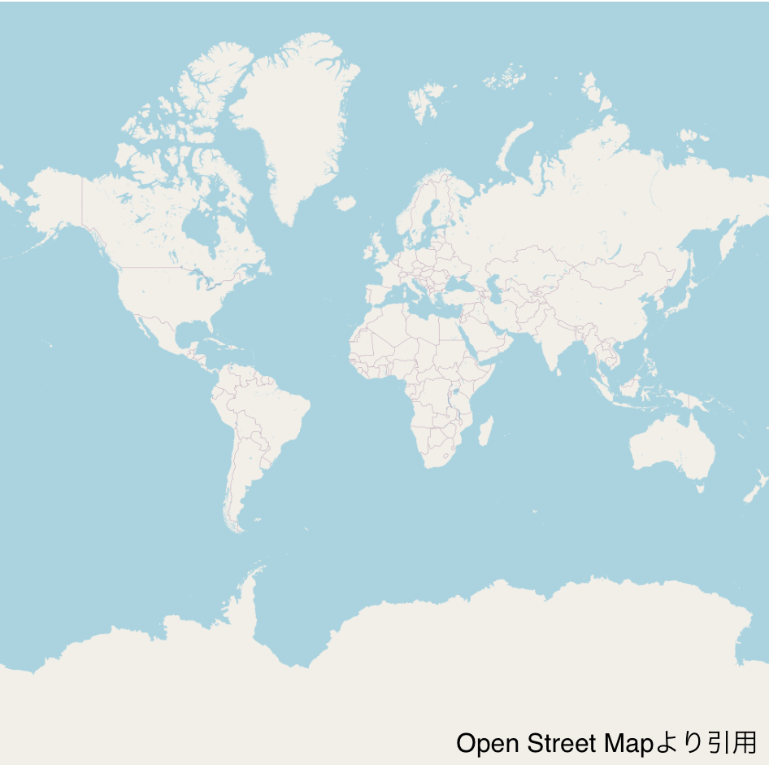 --- ### 地球儀で見る南極 <div class="simple-box"> * 地球儀で見ると意外と普通の大きさ * なぜなのか？ </div> 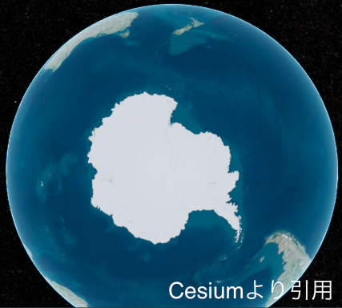 --- ### メルカトル図法 <div class="simple-box"> * 地球儀を平面に投影する方法の一つ * 東西南北の方角(角度)を維持する投影法 * 赤道から離れるほど面積の歪みが大きくなる </div> 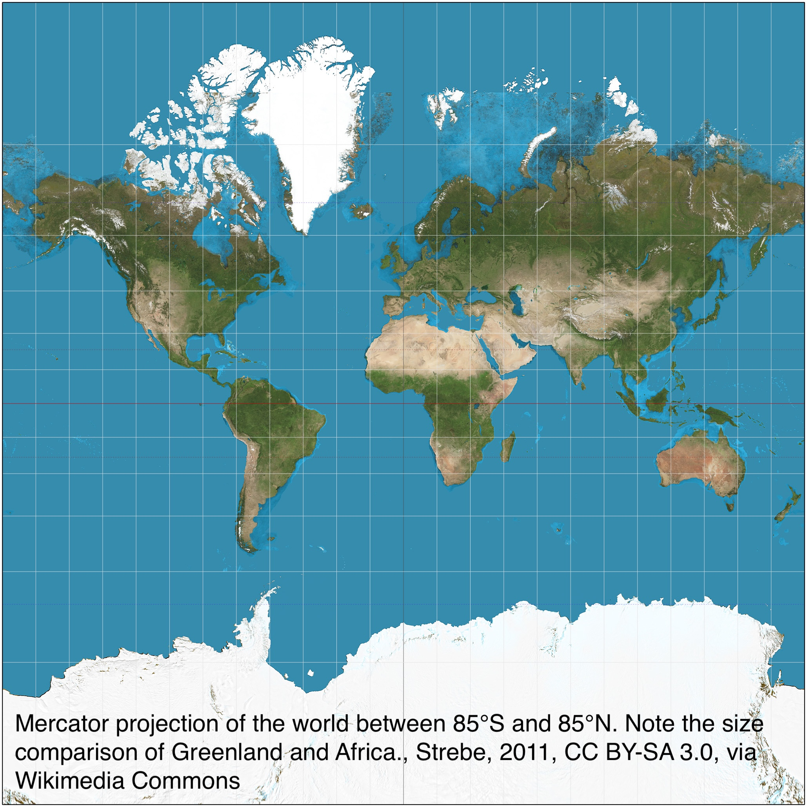 --- ### モルワイデ図法 <div class="simple-box"> * 面積を保存する投影法 * 東西南北の方角は保存されない </div> 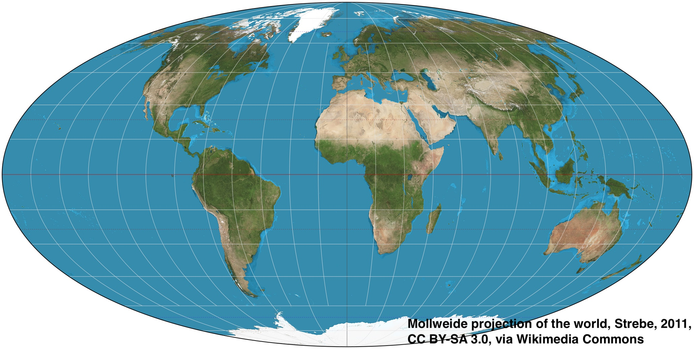 --- ### ランベルト正積方位図法 <div class="simple-box"> * 面積と中心点からの方位を保存する投影法 * 地球全体を平面に投影するのには不向き </div> 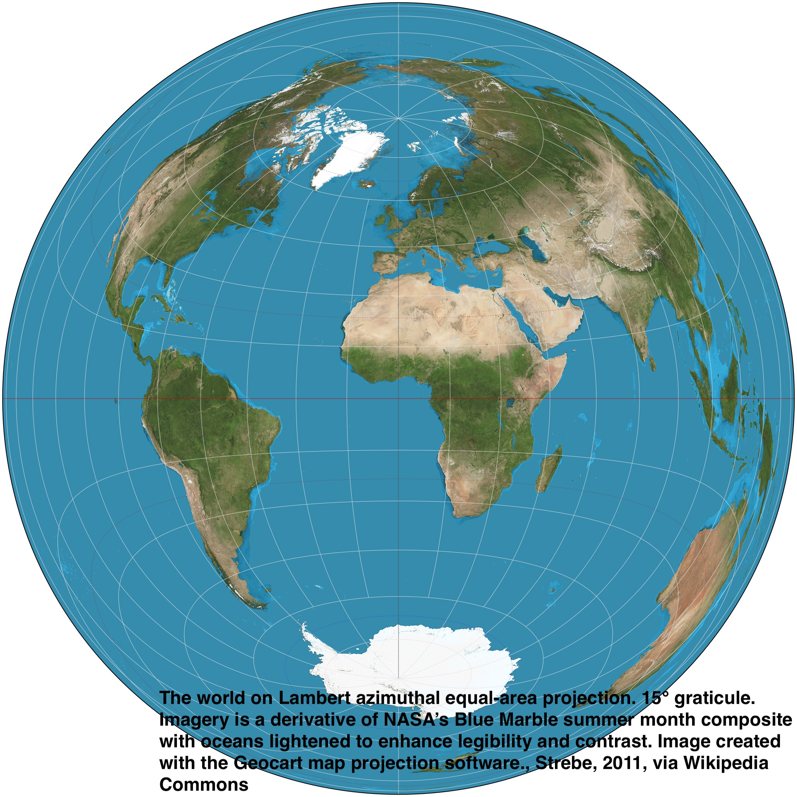 --- ### なぜ多くの地図投影法があるのか？ <div class="simple-box"> * それぞれに長所と短所があるから * メルカトル図法: 方角が正しい、面積は歪む * モルワイデ図法: 面積が正しい、角度は歪む * ランベルト正積方位図法: 中心点からの方位と面積が正しい、全世界地図には不向き </div> <div class="highlight-box"> * 🤔面積も方角も長さも正しい「万能な地図」はないかな？ </div> --- ### ガウス「そんなものはない」 <div class="container"> <div class="col-box-left" data-markdown> * **ガウスの驚異の定理** * 地球儀のすべての情報を正しく平面の地図に投影することは不可能 * みかんの皮を剥いて平らに広げることはできない * **数学的補足**: 球面と平面のガウス曲率は異なるから </div> <div class="col-right"> 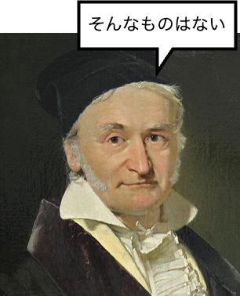 </div> </div> --- ### なぜメルカトル図法が広く使われるのか？ <div class="simple-box"> * **方角(角度)が正確** * 数学的に言うと等角写像 * 大航海時代、羅針盤を頼りに航海する船乗りたちにとって方角が最も重要だった </div> <div class="highlight-box"> * 16世紀の航海者たちが使った地図投影法を、21世紀にとある企業が注目した... </div> --- <div class="simple-box"> * 2005年、Googleがメルカトル図法を使ったGoogle Mapsをリリース * Web地図技術を開発したWhere 2 Technologies社を買収 * 世界中の地図を手軽に見ることができるようになった </div> <div class="highlight-box"> * 🤔なぜGoogleはWeb地図にメルカトル図法を選んだのか？ </div> --- ### Webメルカトル図法の特徴 <div class="simple-box"> * Google Mapsで採用されたWebメルカトル図法は**Web地図に最適化された地図投影法** * 世界地図を**正方形**とすることで地図を正方形のタイル状に分割可能 * タイルを分割して表示することで、効率的に地図を描画できる * 1つのタイルは256x256ピクセル * 必要な範囲のタイルだけを取得して表示 * 全世界の詳細な地図を取得する必要がない * **Webで効率的に地図を表示するための技術！** </div> --- ### ズームレベルとタイル分割 <div class="simple-box"> * 地図を**ズームレベル**(z)によって分割 * 2<sup>2z</sup>個のタイルに分割 (以下はz=1の例) </div> 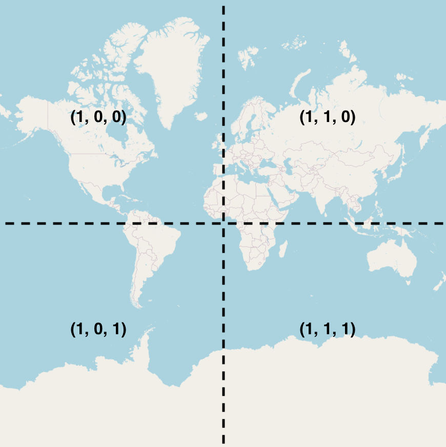 --- ### ズームレベルを増やすと...？ <div class="simple-box"> * z = 2 の場合、2<sup>2*2</sup> = 16個のタイルに分割 * z = 24 (最大値) の場合、2<sup>2*24</sup> = 約281兆個のタイルに分割 </div> 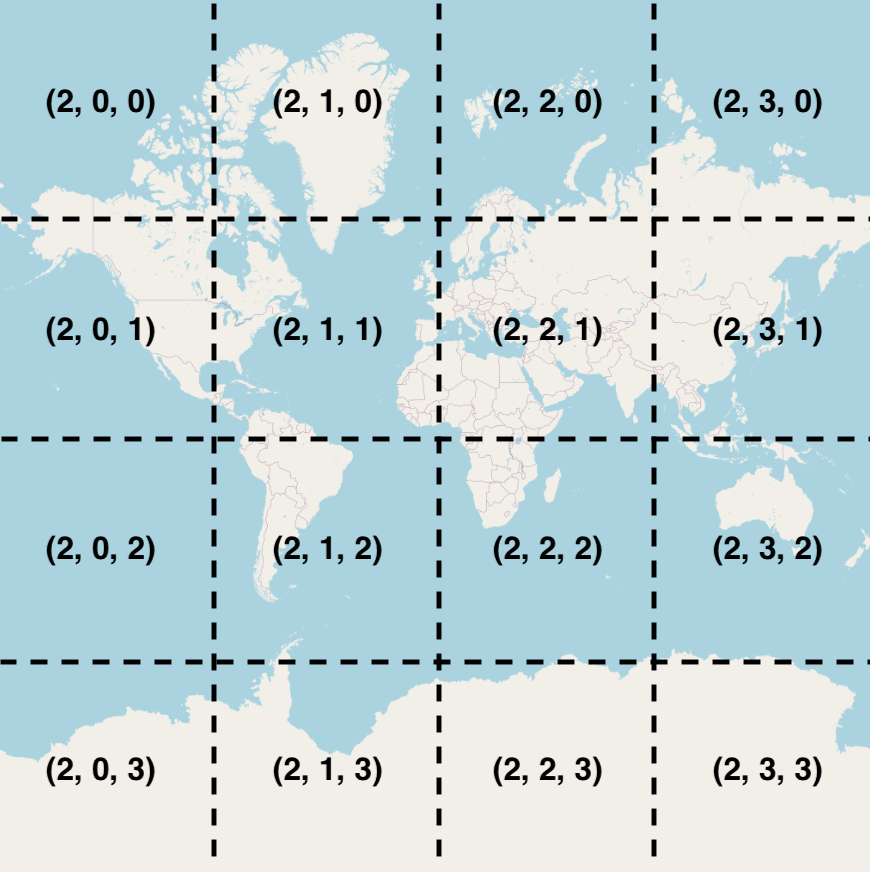 --- ### タイル座標の計算方法 <div class="simple-box"> * θ: 経度 (longitude) * φ: 緯度 (latitude) * z: ズームレベル * x, y: タイル座標 * ⌊.⌋: フロア関数 </div> $$ x = \left\lfloor \frac{(θ+180)}{360} \times 2^z \right\rfloor $$ $$ y = \left\lfloor \Bigl(\bigl(1 - \frac{\log(\tan \varphi + \sec \varphi)}{\pi}\bigr) \times 2^z\Bigr) \right\rfloor $$ --- ### 計算例: 東京タワーのタイルを求める 東京タワーの座標は * 北緯: 35.658581 (degree) * 東経: 139.745433 (degree) z=17として先述の式に入れて計算すると $$ x = 116415$$ $$ y = 51623$$ --- 実例: OpenStreetMapのタイル 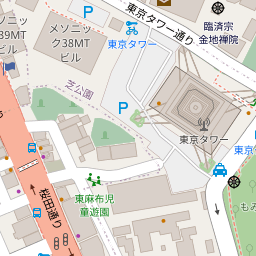 <div class="simple-box"> * https://tile.openstreetmap.org/{z}/{x}/{y}.png の形式 * z=17, x=116415, y=51623 を入れる * 東京タワーが含まれるタイルを取得！ </div> --- ### よくある処理フロー <div class="simple-box"> 1. ユーザが地図を操作 2. 表示範囲のタイル座標を計算 3. タイルを取得して表示 </div> <div class="highlight-box"> * 今注目している範囲の256x256ピクセルのタイルを複数取得して表示するだけで、Web地図が実現できる！ * ズームレベルと関心領域に応じて、必要な解像度の地図を必要な範囲だけ取得して表示 * **Web地図の基本的な仕組み** </div> --- ### 実例: web地図はツギハギだらけ 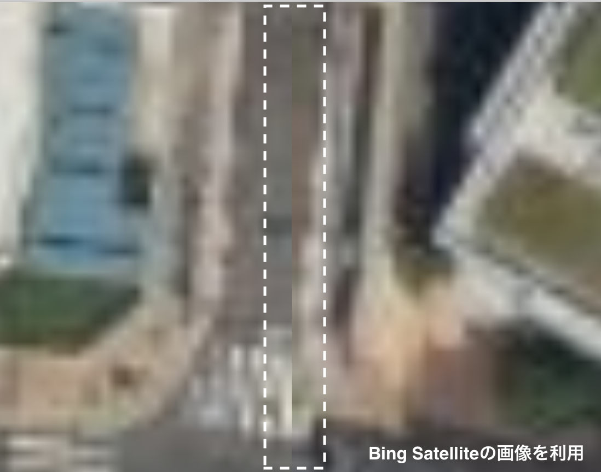 --- ### なぜツギハギがあるのか？ <div class="highlight-box" data-markdown> * Bing Satelliteのズームレベルを最大にするとタイルの境界が目立つ * 複数枚の人工衛星画像をツギハギして、1枚の大きな地図のように見せている * 異なる日に撮影された画像を合成しているため、ツギハギが発生 * 雲の少ない画像同士を選んで繋げている * **Web地図の裏側** </div> --- ### まとめ * 地球儀の情報をすべて正確に平面の地図に投影することは不可能 * Web地図技術はWebメルカトル図法を採用している * 等角写像であることから正方形に分割できることが都合がよかった * ズームレベルとタイル分割によって、Web地図を効率的に表示 * 必要なものを必要なときに必要な分だけ取得する * **Web開発の基本原則を体現** --- ### おまけ: 3D Tiles 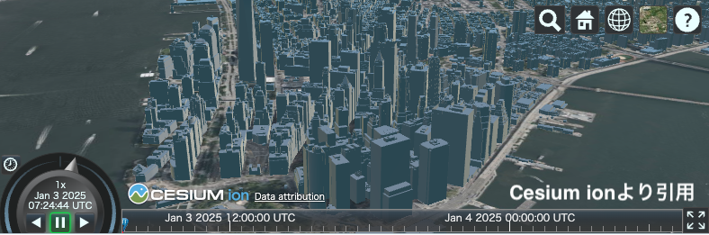 <div class="highlight-box"> * 3Dモデルのタイル分割技術 * LOD (Level of Detail) によって必要な3Dデータのみを取得して表示 * 3D地図の標準技術として注目されている </div>